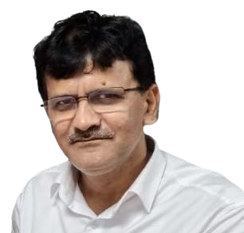
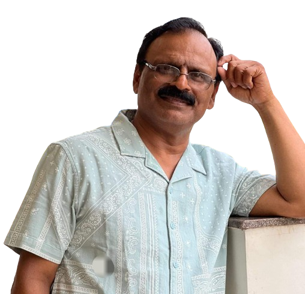
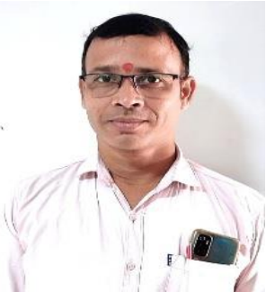
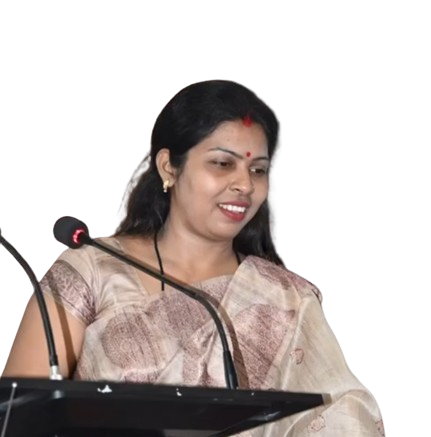
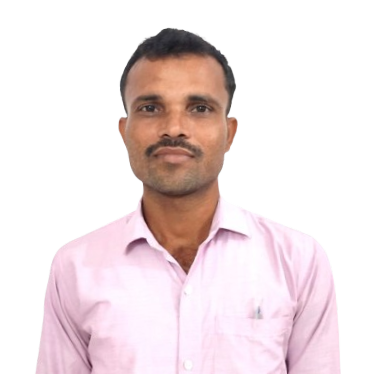
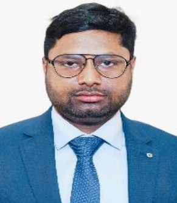
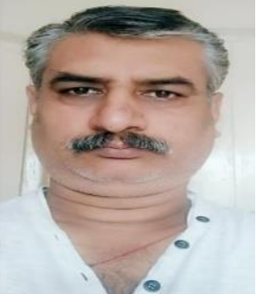
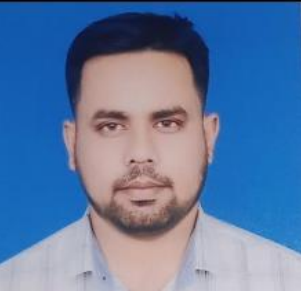

--Our Faculty Members--

Dr.Avay Kumar (Principal)
- Principal of L.N.T College (Muzaffarpur,Bihar)
- Professor In-Charge (Philosophy),
Humanities
- Dean Student Welfare, B.R.A. Bihar University, Muzaffarpur - 15 August 2019 to 15 August 2021

Dr. Sunil Jaiswal (Co-Ordinator)
- Assistant Professor, Department of Chemistry, L.N.T.
College, B.R. Ambedkar Bihar University
- HEAD, Department of Chemistry,
L.N.T. College, Muzaffarpur
- Member of Appointment committee
Chairman & Member of various
Purchase Committee for Science
departments and BCA departments
- Area of Specialization
& research fields Inorganic Chemistry, Spectroscopy, Materials Science
Nanomaterials and Nanotechnology etc.

Dr.Pramod kumar (H.O.D Of BCA)
- Prof. Pramod Kumar - Assistant Professor(RP) - Ph.D.(P), M.Phil, MCA, M.Sc., PGDCA, B.Sc.(Hons) and having 3 years of experience as executing
- HOD responsibility at BCA & having more than 12 years of teaching experience (More than 8 of teaching in PG Department of Electronics Science
- more than 8 years in BCA course as overlapping for 4 years in between) and More than 16 years of IT professional experience in MNCs as Project Manager
- Transition Manager, Sr. System Analyst, Analyst Probationary Officer System,Team Lead and System Administrator
Attended National and International Seminars
- Certified professional as PMP, ITIL, CISA, Microsoft Soft IT professional.

Amrendra Kumar Raushan (Assistant Professor)
- Prof. Amrendra Kumar Raushan - Assistant Professor(RP) - Ph.D.(P), M.C.A., M.Sc., M.Phil., PGDCA
- More than 14 years of teaching experience in different institutions(More than 8 of teaching in PG
- Department of Electronics Science and more than 14 in BCA course as overlapping for 8 years in between)

Arti Singh (Assistant Professor)
- Prof. Arti - Assistant Professor(RP) - M.C.A. & More than 14 years of teaching experience in different institutions.

Munna Kumar Jha(Assistant Professor)
- Prof. Munna Kumar Jha - Assistant Professor - M.C.A. & More than 3 years of teaching experience in different institutions.
e

Rahul Kumar(Assistant Professor)
- Prof. Rahul Kumar Singh - Assistant Professor(RP) - Ph.D.(P), M.C.A. & More than 3 years of teaching experience
- Ph.D in Computer Application from BRA Bihar University, Muzaffarpur, Bihar
- . Master in Computer Application (MCA) from Galgotias University, Greater Noida, UP
- Ability to express technical concepts clearly to people with no technical background
- Working as Assistant Professor (Resource Person) in BCA Department of BRA Bihar University's Constituent College

Pankaj Kumar (Management Of BCA Department)
- Mr. Pankaj Kumar - G3 Staff - Office Assistant - B.A.(Hons) Psychology & More than 10 years of office management.

Mr. Indrajeet Kumar(Office Staff)
- Mr. Indrajeet Kumar, G4 Staff - Office staff - M.A. History B.A.(Hons), Just joined, hardly one year completed
e